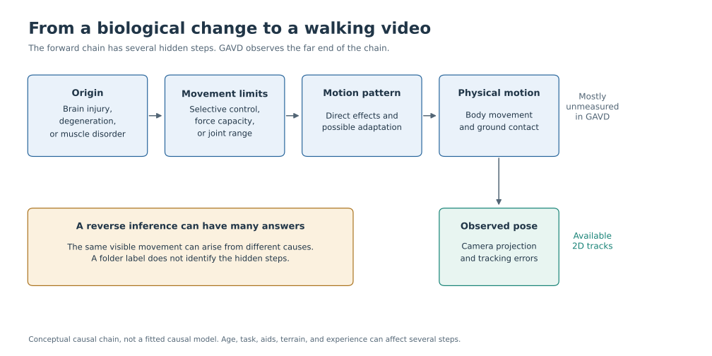
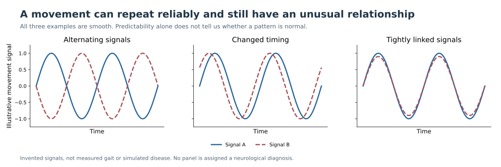
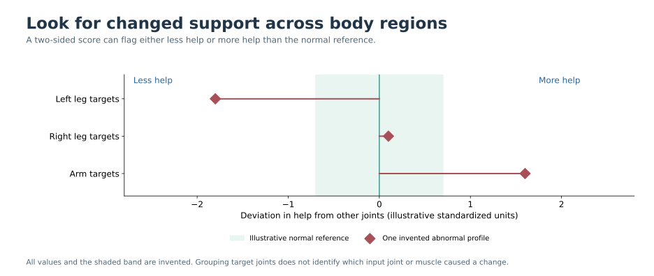
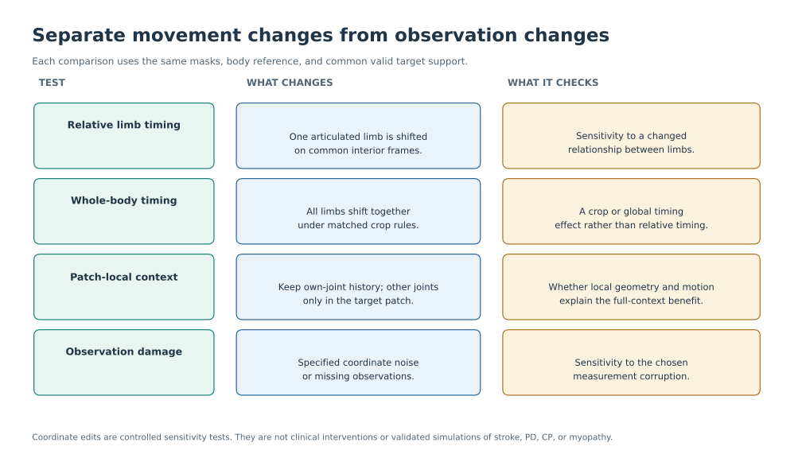

Clinical mechanisms suggest observable questions while leaving substantial overlap between conditions.
Vector PDFThese are conceptual illustrations of proposed research. Curves and profiles contain no experimental results. The linked research documents provide the evidence and limitations.

Biological origins influence movement through control, body capacity, and adaptation. Video alone does not reveal each step.
Vector PDFClinical mechanisms suggest observable questions while leaving substantial overlap between conditions.
Vector PDF
Toy signals explain why altered relationships need not make movement noisy or unpredictable.
Vector PDF
The proposed profile detects departures in either direction. This figure contains no experimental result.
Vector PDF
The immediate experiment reuses the existing pose pipeline and tests a specific motion prediction claim.
Vector PDF
Controls test the interpretation of model behavior, rather than assigning synthetic diagnoses.
Vector PDF
A future model separates physical dynamics, latent control, and camera observations, with additional measurements for validation.
Vector PDF
The ambitious contribution is reliable ambiguity and measurement selection, beyond choosing one simulated cause.
Vector PDF